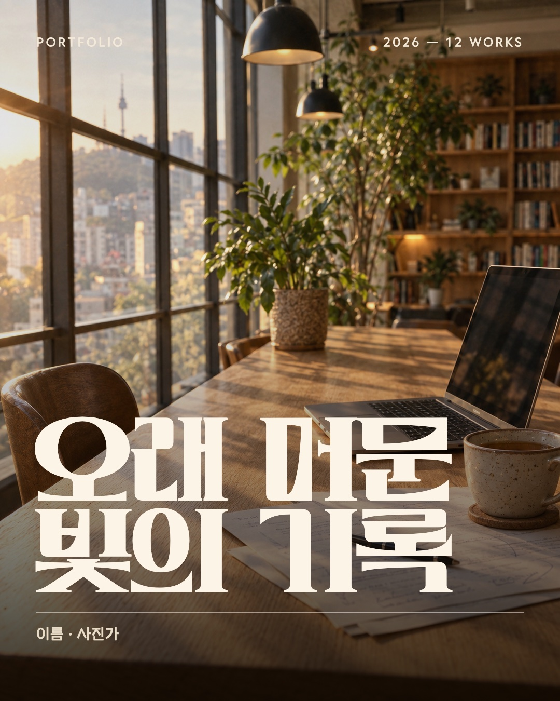
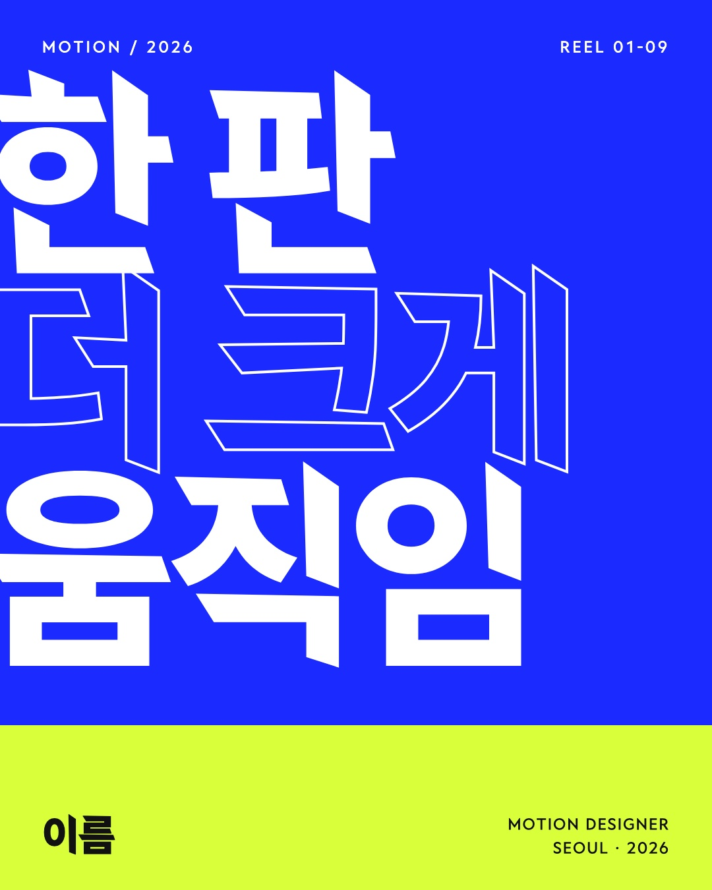
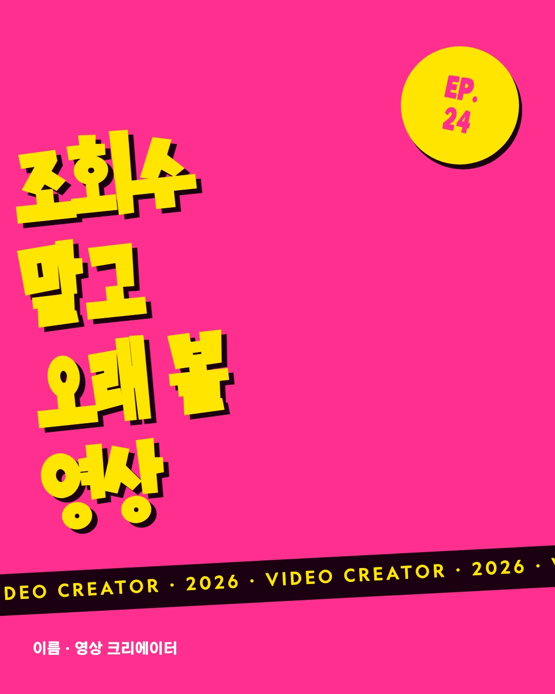
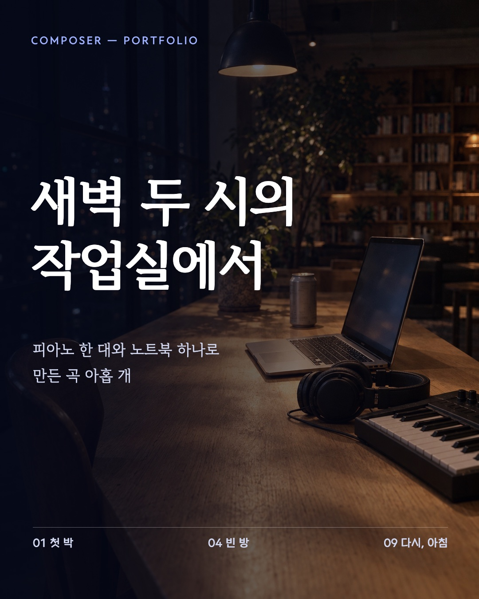
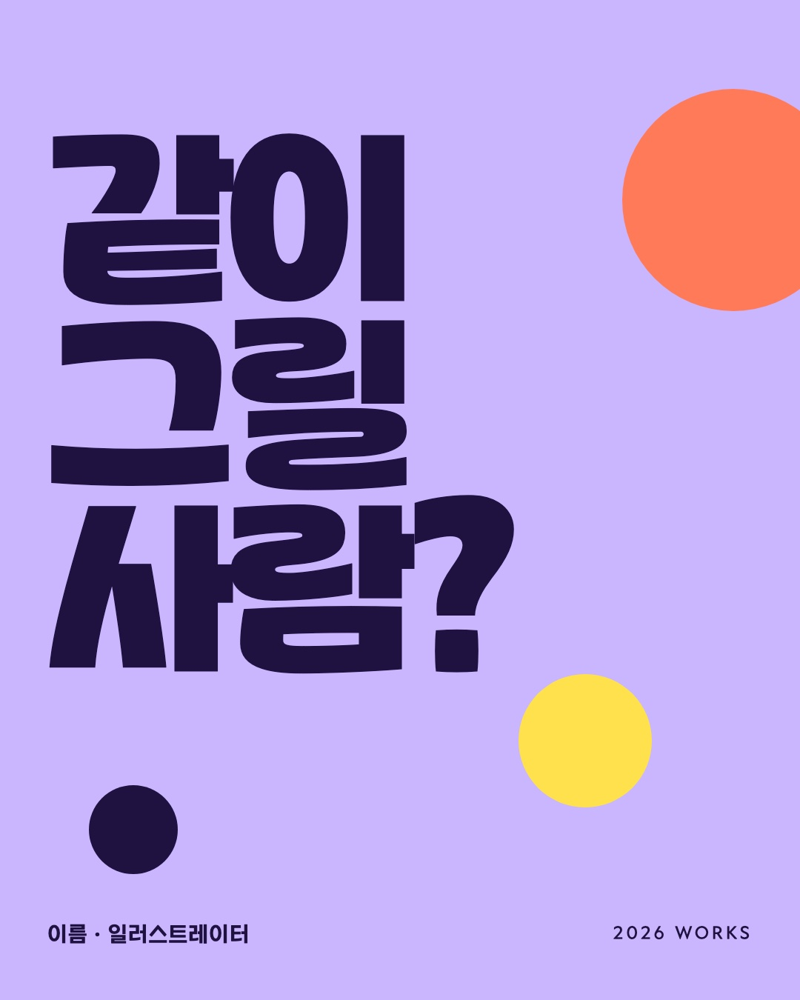

왜 내 표지에는 댓글이 안 달릴까 — 반응 큰 게시물 14개와 나란히 본 부족한 점
샐리 10/30: 「직군별 표지 6장 퀄리티가 낮아서 전혀 호응 못 받아. 지금 댓글이 달리는 수준부터 확인하고, 뭐가 부족한지 분석해.」 확인해 보니 댓글 수와 디자인은 따로 움직였어요. 댓글 300개가 넘는 게시물 여섯 개는 모두 「댓글 남기면 보내 드려요」를 썼어요. 디자인만 보여 준 게시물은 좋아요가 1만 3천이어도 댓글이 295개였어요. 그리고 제 표지는 그 두 가지가 다 약했어요. 받을 게 없고, 첫 장이 눈을 붙잡지 못해요. 부족한 점은 여덟 가지로 정리했고, 가장 큰 건 세 가지예요. 표지에 진짜 작업이 없고, 평평한 도형뿐이라 재질과 깊이가 없고, 움직임이 없어요.
제 v2 표지 6장 — 반응 큰 게시물 첫 장과 나란히 둔 비교 보드는 옵시디언에 있어요(남의 게시물 그림이라 공개 페이지엔 싣지 않았어요)






1. 지금 댓글이 달리는 수준 (10/30 다시 열어 본 값)
| 게시물 | 좋아요 | 댓글 | 댓글 장치 |
|---|---|---|---|
| @ai_dori_ AI 영상 릴스 | 4,313 | 2,131 | 「댓글에 [AI] … 링크 보내드려용」 |
| @grimiartdesign 디자이너 단가 공식 | 204 | 1,147 | 「댓글에 '단가'라고 남겨주세요」 |
| @ai.trend.kr 회의록 한 장 | 876 | 1,012 | 「필요하시다면 댓글 남겨주세요」 |
| @trenddalkak.ai 효과음 AI | 692 | 836 | 「아무 댓글 남겨주세요」 |
| @tuisy.design 일러스트 모션 | 1,391 | 536 | 「댓글에 [마누스] 남겨주세요」 |
| @designer_kellys2 직무 분석 | 205 | 329 | 「좋아요 & 댓글 … 링크 받기」 |
| @notefolio 바이럴 잼컨 | 13K | 295 | 없음 |
| @beyondbetterbrand 2020 vs 2026 | 3,221 | 80 | 없음 |
| @remaincareer 포폴 표지 | 42 | 49 | 「댓글 남겨주시면 보내드릴게요」 |
| @googlefonts Boldonse | 7,401 | 27 | 없음 |
| @googlefonts Funnel | 8,301 | 21 | 없음 |
| @baehausdesign AI 디자이너 | 1,533 | 8 | 없음 |
| @baehausdesign 폰트 조합 8가지 | 2,474 | 6 | 없음 |
| @notefolio 폰트 큐레이션 책 | 482 | 3 | 없음 |
- 댓글 300개가 넘는 여섯 개는 전부 「댓글 남기면 ○○ 보내 드려요」예요. 받을 물건은 툴 링크, 단가 공식, 정리 문서처럼 바로 쓸 수 있는 거였어요.
- 디자인만 보여 준 글은 좋아요와 저장이 몰리고, 댓글은 30개를 넘기 어려워요(구글 폰트 8,301에 21).
- 같은 「포폴 표지」 주제에 댓글 장치까지 쓴 리메인커리어도 49개였어요. 장치만으로는 안 되고, 받을 물건이 탐나야 해요.
2. 제 표지가 부족한 점
- 표지에 진짜 작업이 없어요. 노트폴리오는 실제 책을 든 사람, 그리미아트는 실제 책상과 모니터, 리메인커리어는 완성된 포폴 목업을 보여 줘요. 제 여섯 장은 「포트폴리오 표지」라면서 작업물이 한 장도 없고, 이름 칸도 「이름」이에요. 보는 사람이 가져가서 쓸 장면이 떠오르지 않아요.
- 평평한 도형뿐이라 재질과 깊이가 없어요. 노트폴리오 폰트 글은 크롬처럼 흐르는 입체 글자를 사람 사진 위에 얹었고, 리메인커리어는 점토 질감·종이 콜라주·기기 목업으로 층을 쌓았어요. 저는 HTML로 색 면, 동그라미, 글자만 깔았어요. 장식 동그라미는 오히려 템플릿 티를 내요.
- 움직임이 없어요. 댓글 300개가 넘는 여섯 개는 전부 첫 장이 영상이었고, 반응 큰 14개 중 8개가 영상이에요. 피드에서 먼저 멈추게 하는 건 움직이는 첫 1초예요.
- 사진이 우리 것이 아니에요. 배경은 라운지 2화에 쓴 AI 사진을 다시 쓴 거라, 어디서 본 듯한 카페 사진이에요. 반응 큰 글의 사진은 하나같이 그 계정에서만 나오는 장면이에요(당나귀 녹음실, 작가 책상, 직접 그린 일러스트).
- 폰트를 보여 주기만 하고 다루지 않았어요. 구글 폰트는 글자 하나를 화면 밖으로 넘길 만큼 키우고 두 색만 써서 폰트 자체가 주인공이에요. 저는 폰트마다 비슷한 포스터 틀에 제목을 앉혔을 뿐이라, 자간·크기 대비·잘림 같은 손질이 없어요.
- 첫 줄에 긴장이 없어요. 반응 큰 글은 「이거로 종결!!!」「단 2개」「하나하나 찾는 중?」처럼 손해나 궁금증을 찔러요. 제 첫 줄은 「만들어 봤어요」라서 넘길 이유가 약해요.
- 댓글 장치를 미뤘어요. 확인해 보니 댓글은 장치가 만들어요. 그런데 저는 DM 자동 발송이 보류라는 이유로 그 안을 뒤로 뺐어요. DM 없이 댓글에 답글로 바로 돌려줄 수 있는 장치는 찾지 않았어요.
- 만드는 방식이 판정을 건너뛰었어요. 학습 노트에 「레퍼런스 실물을 먼저 열어 보기」와 「레퍼런스 사이에 섞어 블라인드로 판정하기」가 있는데, 이번엔 반응 큰 게시물의 첫 장을 열어 보기 전에 표지부터 그렸어요. 그리고 HTML·CSS로만 그려서 입체, 실사, 움직임은 처음부터 만들 수 없었어요.
3. 넘으려면 이렇게 다시 할게요
- 판정 기준선부터 세워요. 반응 큰 게시물 첫 장 20장 사이에 제 첫 장을 섞어 놓고, 출처를 모르는 판정자가 상위 5위 안에 넣지 않으면 샐리에게 보여 주지 않아요.
- 진짜 작업을 넣어요. 위클리 베스트 수상작처럼 실제 회원 작업을 동의 받아 표지에 넣거나, C8 크루가 직접 만든 작업으로 채워요. 「이름」 같은 빈칸은 없어요.
- 재질과 장면을 입혀요. 정확한 글자판은 제가 만들고, 이미지 생성 도구로는 재질과 장면만 입혀요. 인쇄된 책, 벽에 붙은 포스터, 책상 위 모니터, 크롬·점토 같은 재질이에요.
- 6~8초 릴스로 만들어요. 글자가 쪼개지고 모이는 첫 1초를 만들어요. 타입툴즈의 움직임 기능과 화면 녹화를 써요.
- 댓글 장치는 DM 없이 돌려요. 「댓글에 직군을 남기면 그 직군 표지를 새 폰트로 만들어 답글로 달아 드려요」. 받는 물건이 그 사람 맞춤이라 탐나고, 크루가 직접 그려 답글로 달면 되니 DM 연결이 필요 없어요. 스레드도 같은 장치로 가요.
샐리가 정할 것
다음 시안의 재료를 무엇으로 할까요?
추천은 「이미지 생성 목업 먼저, 실제 회원 작업은 동의를 받는 대로 바꿔 넣기」예요. 회원 작업은 동의를 받는 데 시간이 걸리고, 목업은 바로 시작할 수 있어요. 이미지 생성은 Codex 이미지 도구로 시작하고, Higgsfield 유료 결제는 결과를 본 뒤에 정해요.
「댓글에 직군 남기면 맞춤 표지를 답글로」 장치를 써도 될까요?
크루가 한 사람당 표지 한 장을 그려 답글로 달아요. 댓글이 많아지면 크루 작업량이 늘어나니 하루 상한(예: 30장)을 둘지 함께 정해요.
확인 못 한 것
- 반응 큰 게시물의 저장·공유 수는 로그인 없이 보이지 않아 좋아요와 댓글만 비교했어요.
- 「상위 5위」 블라인드 판정은 아직 돌려 보지 않았어요. 기준선을 세우는 다음 단계예요.